WorldFirst · Business customer story · Visual library
Limmys visual library
Frames from WorldFirst's own film about Limmys, picked for the case page, social posts and sales material. Select a frame to see it full size. Every frame downloads at the film's native resolution.
48 frames · 8 top picks · How Limmys Sold Over 1 Million Swim Products Across 3 Continents with WorldFirst · updated 20 Oct 2026
01
Top picks
The frames to reach for first: sharp, clean of on-screen text, and strongest for the page.
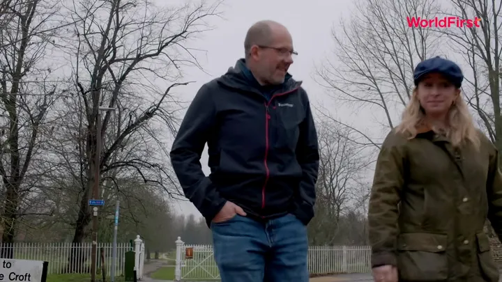
Jon Greenwood walks through the village with the film's interviewer
Social 4:5 Story 9:16
WorldFirst branding
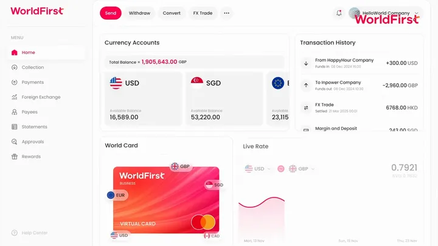
The WorldFirst dashboard, with a World Card shown
Banner
WorldFirst branding Third-party brand
Jon Greenwood smiling during the interview
Hero Headshot Social 1:1 Social 4:5 Share image
WorldFirst branding
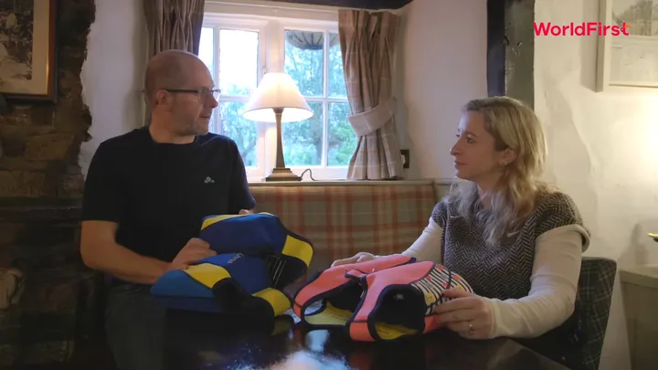
Jon Greenwood brings out Limmys swim vests at the pub table
Intro image Banner Social 1:1
WorldFirst branding
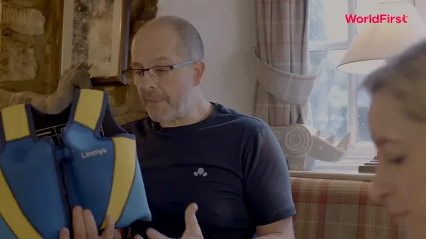
Jon Greenwood with the boys' swim vest, Limmys' first product
Social 4:5 Social 1:1
WorldFirst branding
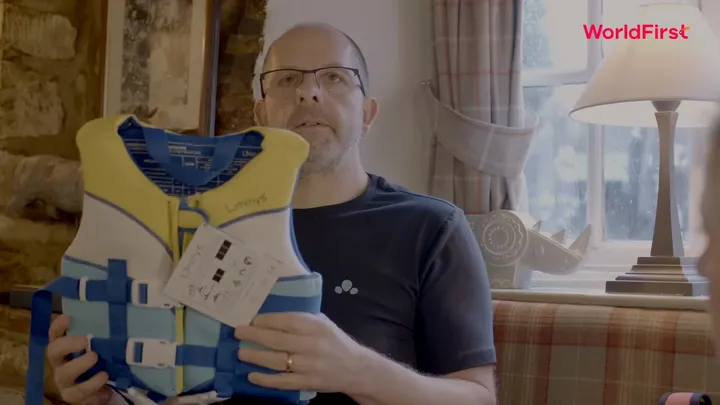
Jon Greenwood holds one of Limmys' newer adjustable swim vests
Hero Social 4:5 Social 1:1
WorldFirst branding
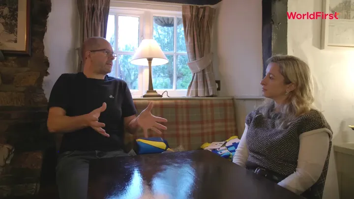
Jon Greenwood in conversation with the interviewer, products on the table
Intro image Banner Social 1:1
WorldFirst branding
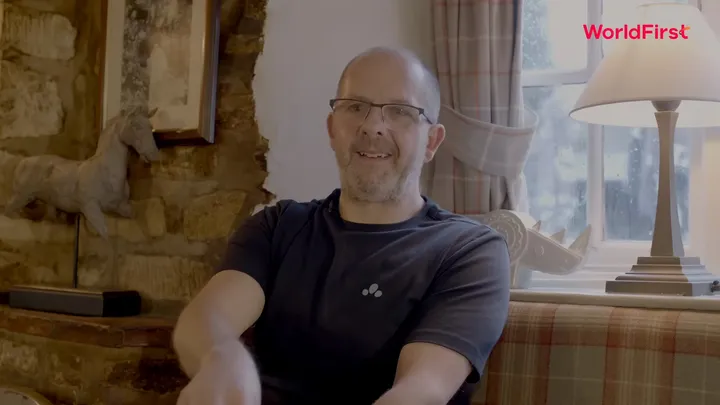
Jon Greenwood smiling as he talks about taking risks
Hero Headshot Social 1:1
WorldFirst branding
02
The film
Where the frames come from. The film marked for the case page sits at the start of the article.
Title
How Limmys Sold Over 1 Million Swim Products Across 3 Continents with WorldFirst
Resolution
1920 x 1080, landscape
On the case page
Yes, at the start of the article.
03
All frames
Filter by what the frame shows or by where it can be used. Use tags mean the frame crops to that slot without losing the subject.
All 48 Portrait 19 At work 8 Product 8 Place 1 Brand 3 Screen 9
Any use Hero 3 Intro image 9 Headshot 11 Banner 5 Share image 1 Social 1:1 11 Social 4:5 7 Story 9:16 1
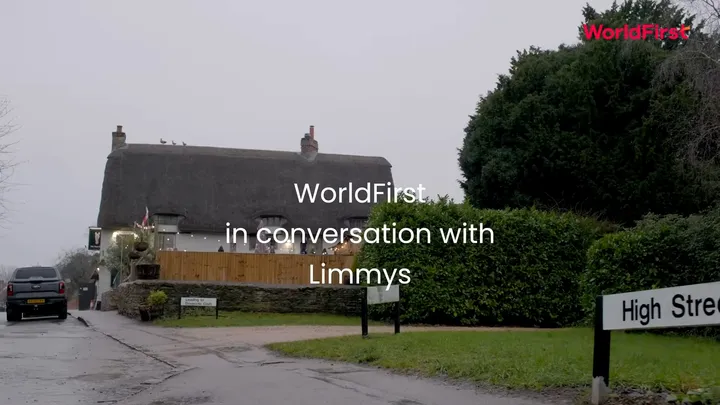
A thatched village pub on a rainy High Street, under the film's opening title
Text in frame WorldFirst branding
Jon Greenwood walks through the village with the film's interviewer
Social 4:5 Story 9:16
WorldFirst branding
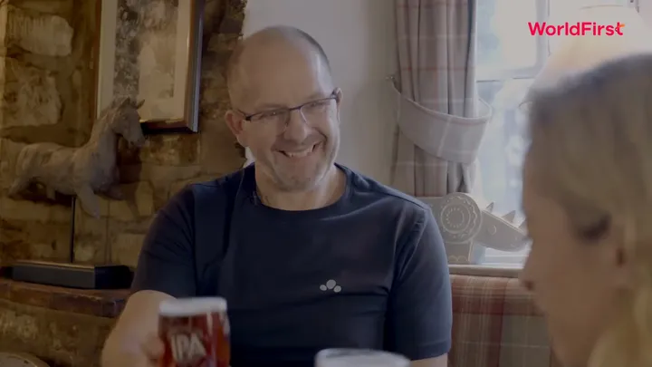
Jon Greenwood raises a pint at the start of the interview
Third-party brand WorldFirst branding
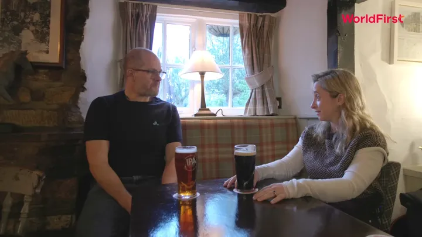
Jon Greenwood and the interviewer at a pub table, with drinks
Third-party brand WorldFirst branding
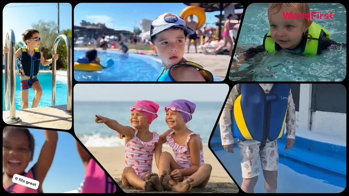
Opening montage of clips of children wearing Limmys swim vests, caps and goggles
Children: needs client permission Text in frame WorldFirst branding
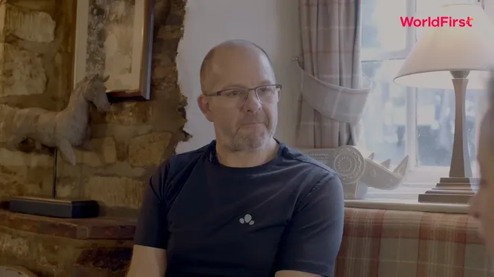
Jon Greenwood listening during the interview
Headshot Social 1:1
WorldFirst branding
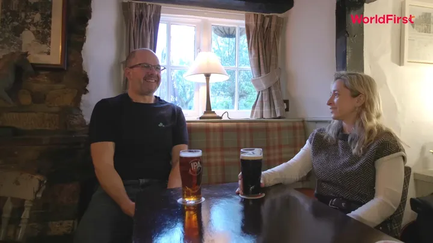
Jon Greenwood smiles as he talks to the interviewer at the pub table
Third-party brand WorldFirst branding
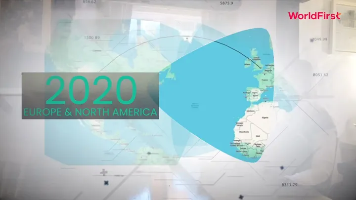
Map graphic: 2020, Europe and North America
Text in frame WorldFirst branding
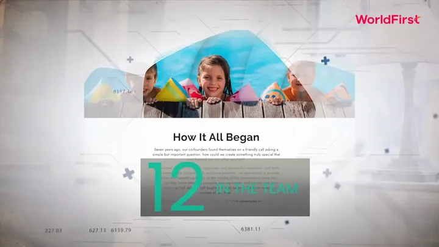
Graphic: 12 in the team, over a 'How It All Began' panel
Children: needs client permission Text in frame WorldFirst branding
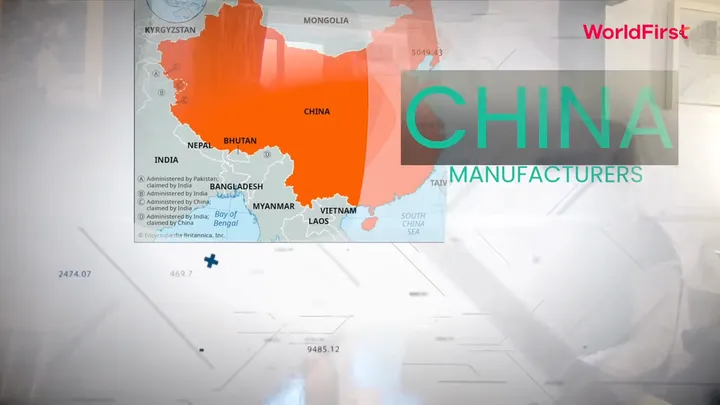
Map graphic: China manufacturers
Text in frame WorldFirst branding
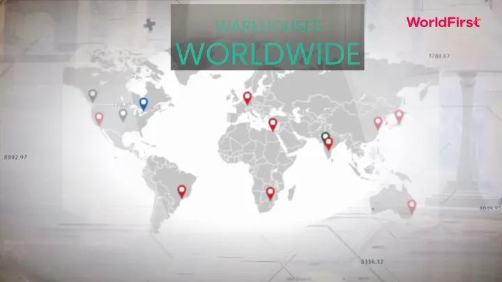
Map graphic: warehouses worldwide
Text in frame WorldFirst branding
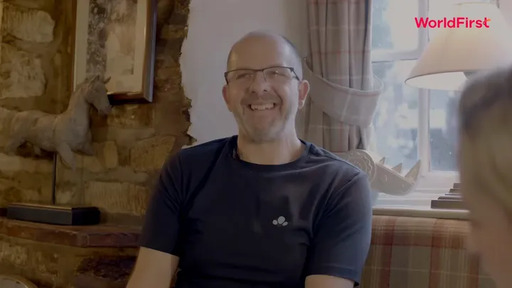
Jon Greenwood laughing during the interview
Headshot Social 1:1 Social 4:5
WorldFirst branding
The WorldFirst dashboard, with a World Card shown
Banner
WorldFirst branding Third-party brand
Jon Greenwood smiling during the interview
Hero Headshot Social 1:1 Social 4:5 Share image
WorldFirst branding
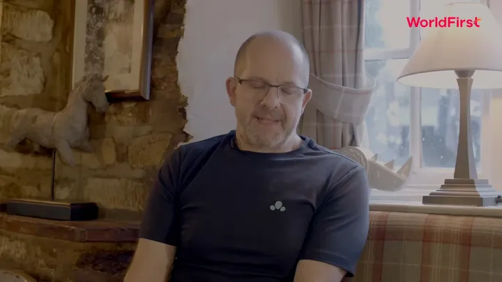
Jon Greenwood talks about what WorldFirst makes easier
Headshot
WorldFirst branding
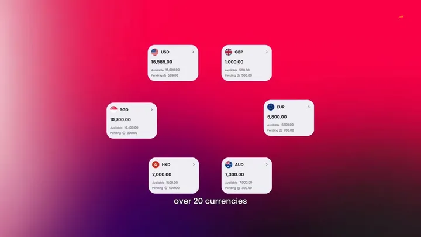
WorldFirst graphic: currency accounts in over 20 currencies
Banner
Text in frame WorldFirst branding
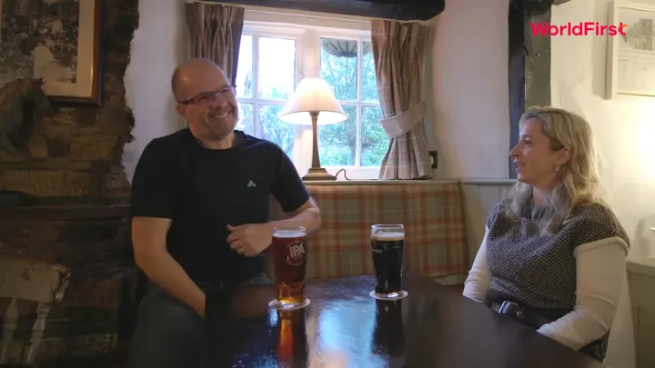
Jon Greenwood laughs with the interviewer at the pub table
Third-party brand WorldFirst branding
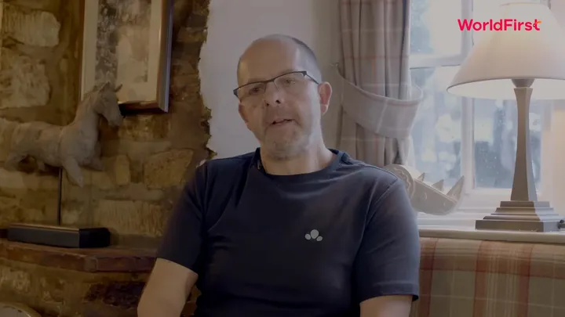
Jon Greenwood explains how the payments are run
Headshot
WorldFirst branding
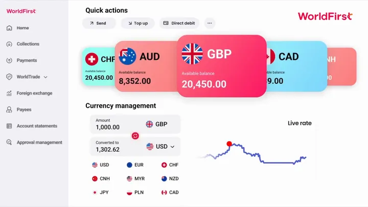
The WorldFirst app: currency balances and a live rate
Banner
WorldFirst branding
WorldFirst web page for the World Card
Text in frame WorldFirst branding Third-party brand
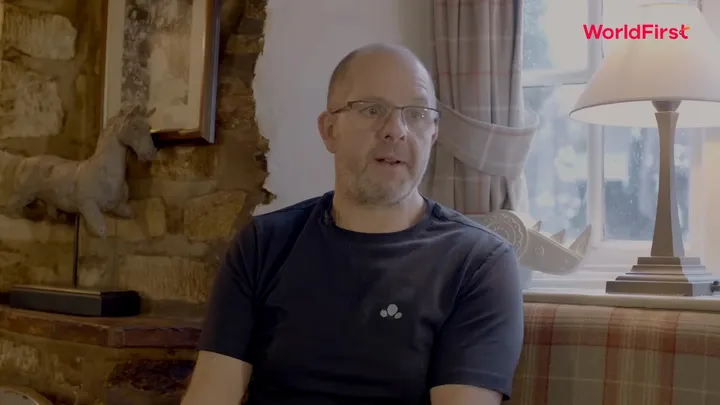
Jon Greenwood talks about moving recurring bills to the World Card
Headshot
WorldFirst branding
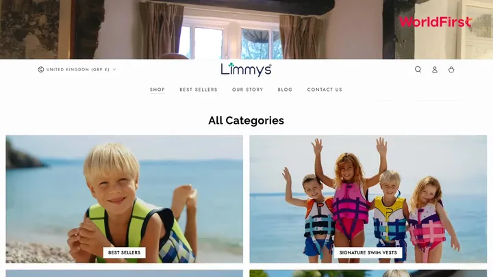
The Limmys online shop, shown in the film
Children: needs client permission WorldFirst branding
Jon Greenwood brings out Limmys swim vests at the pub table
Intro image Banner Social 1:1
WorldFirst branding
Jon Greenwood with the boys' swim vest, Limmys' first product
Social 4:5 Social 1:1
WorldFirst branding
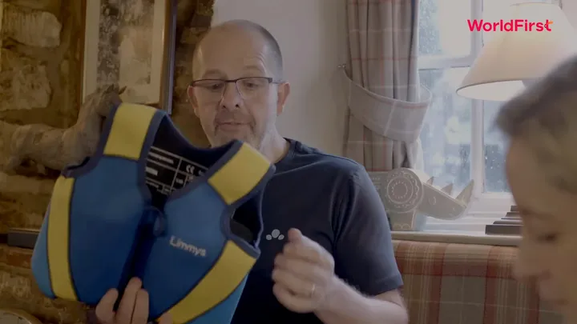
The original Limmys boys' swim vest, held up to camera
Social 1:1
WorldFirst branding
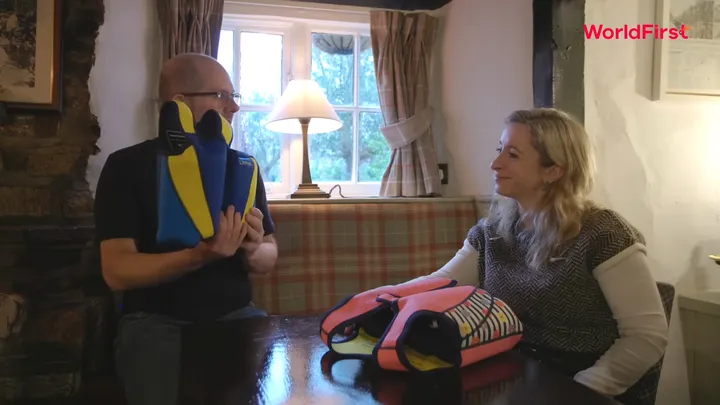
Jon Greenwood shows the interviewer a swim vest
Intro image
WorldFirst branding
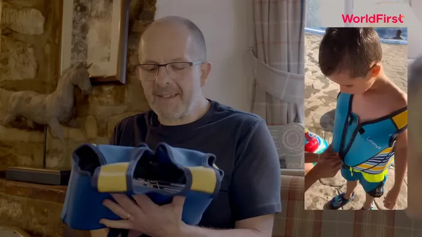
Jon Greenwood with a swim vest, beside a clip of a child wearing one
Children: needs client permission WorldFirst branding
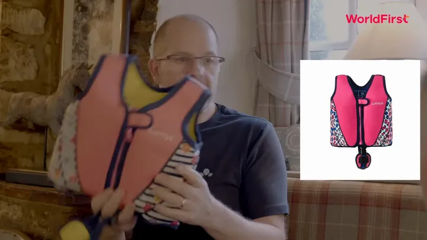
Jon Greenwood holds a pink girls' swim vest, with a product shot inset
WorldFirst branding
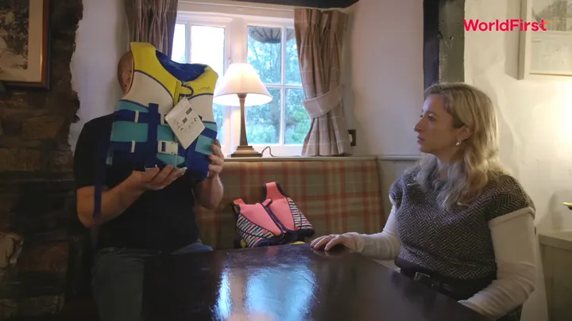
Jon Greenwood shows one of the newer adjustable swim vests
Intro image
WorldFirst branding
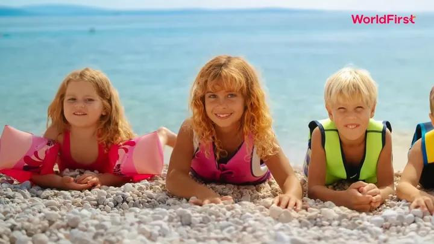
Limmys product photo of children on a pebble beach, shown full screen in the film
Children: needs client permission WorldFirst branding
Jon Greenwood holds one of Limmys' newer adjustable swim vests
Hero Social 4:5 Social 1:1
WorldFirst branding
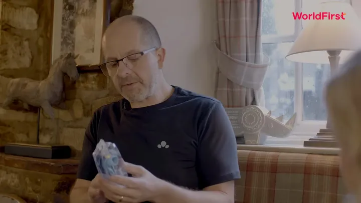
Jon Greenwood with a pair of Limmys children's goggles
Social 1:1
WorldFirst branding
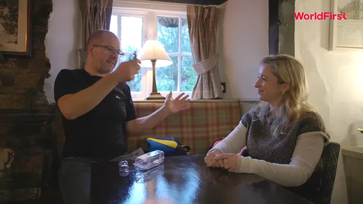
Jon Greenwood shows the interviewer the swim goggles
Intro image
WorldFirst branding
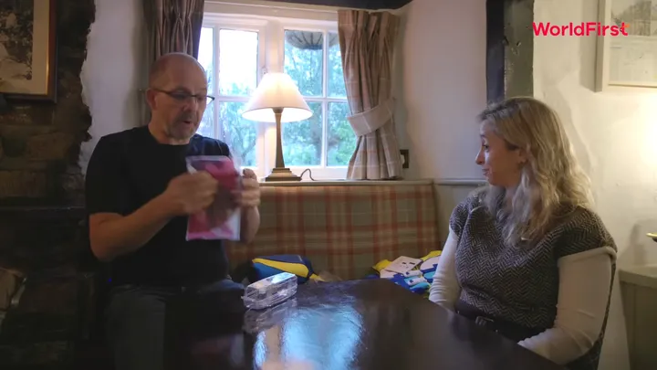
Jon Greenwood with a Limmys swim cap
Intro image
WorldFirst branding
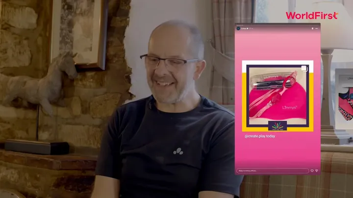
Jon Greenwood smiling, beside a social post shown in the film
Third-party brand Text in frame WorldFirst branding
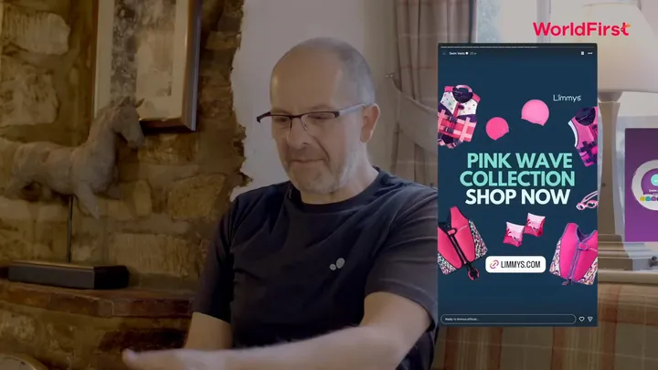
Limmys 'Pink Wave Collection' social post, beside Jon Greenwood
Text in frame WorldFirst branding
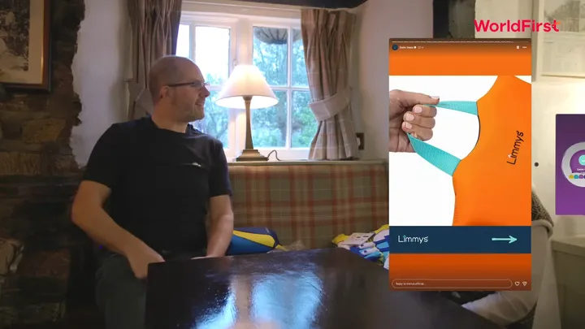
A Limmys social post shown beside Jon Greenwood at the pub table
Text in frame WorldFirst branding
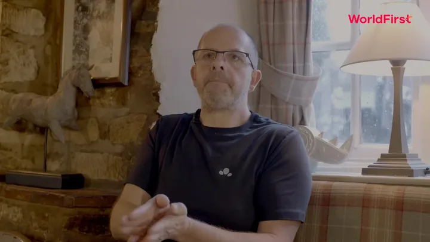
Jon Greenwood talks about designing for children
Headshot Social 4:5
WorldFirst branding
Jon Greenwood in conversation with the interviewer, products on the table
Intro image Banner Social 1:1
WorldFirst branding
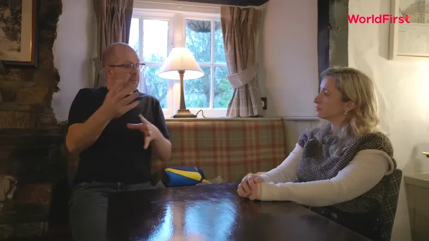
Jon Greenwood explains how markets differ
Intro image
WorldFirst branding
Jon Greenwood smiling as he talks about taking risks
Hero Headshot Social 1:1
WorldFirst branding
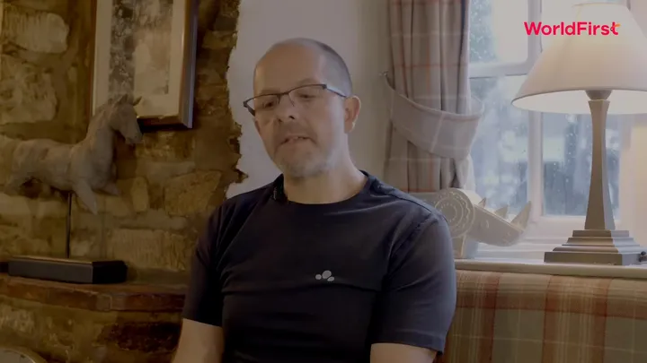
Jon Greenwood talks about knowing when to let go
Headshot
WorldFirst branding
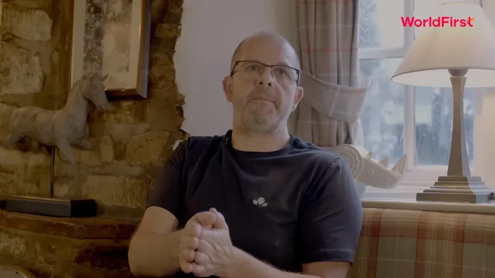
Jon Greenwood talks about change on Amazon
Headshot
WorldFirst branding
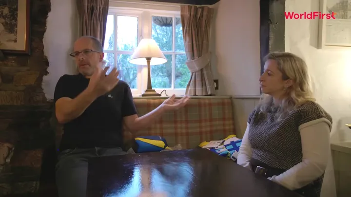
Jon Greenwood talks about how people now find products
Intro image
WorldFirst branding
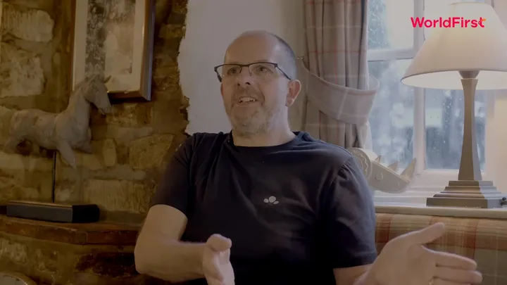
Jon Greenwood's advice to other business owners
Headshot Social 1:1
WorldFirst branding
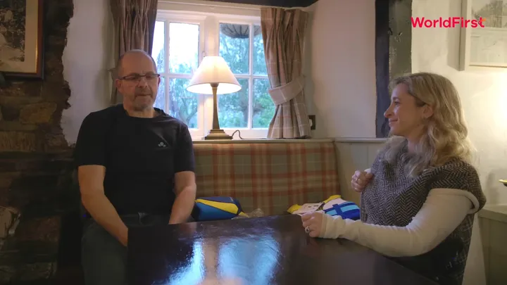
Jon Greenwood and the interviewer at the end of the interview
Intro image
WorldFirst branding
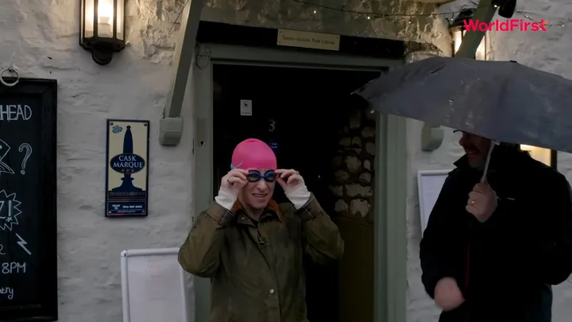
The interviewer tries on a Limmys swim cap and goggles outside the pub
Social 4:5
Third-party brand WorldFirst branding
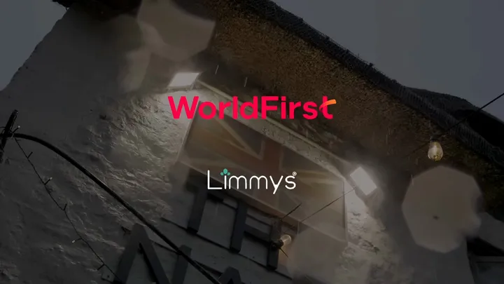
Closing card with the WorldFirst and Limmys logos
Text in frame WorldFirst branding
04
Using these frames
Crop to the slot; never stretch a frame or a logo, and never upscale. Clear every flag before a frame goes public.
Hero, desktop
906 x 680 (4:3)
Hero, tablet
1152 x 768 (3:2)
Hero, mobile
540 x 360 (3:2)
Introduction image
1143 x 491
Quote headshot
120 x 120 (1:1)
Social
1080 x 1080 (1:1), 1080 x 1350 (4:5)
Text in frame
Captions, a lower third or a title card is in the frame. Crop it out or pick another frame.
Third-party brand
Another company's name or logo is visible (named in the crop hint). Clear it or crop it out.
Competitor
A competitor is visible. Never used; listed only if the audit needs it.
Children: needs client permission
Children are visible. Needs the client's written permission before any use.
WorldFirst branding
The WorldFirst logo or app is on screen. Check it is the current logo and product name.
Low resolution
Under the width of the larger slots. Small uses only.
Soft focus
Slightly soft. Small uses only.
Frames are stills from WorldFirst's own published films. Anything showing children, a third-party brand or on-screen text needs clearing before use, and no frame showing a competitor is in this library.